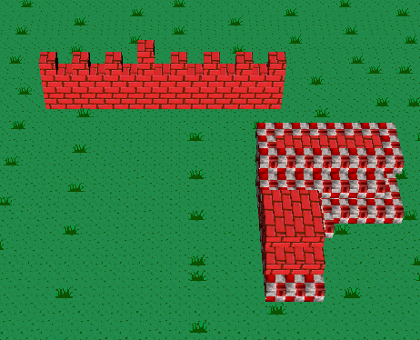
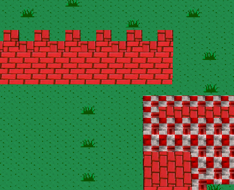
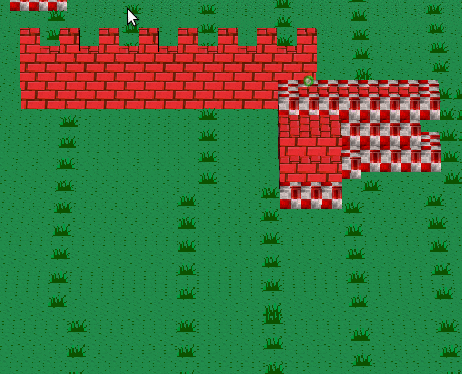

I put together a little camera script that should be useful for RPGs, platformers, and RTS games in the free software Godot Game Engine. It has a top-down (or angled) camera that has built in key-bindings for panning around using WASD keys.
I wrote it to quickly prototype things like content editors or previewing terrain. It also has the ability to track another node, such as the player character in an RPG or action game.
Example basic capabilities
As you can see, it permits panning around, adjusting distance, adjusting angle, and adjusting rotation, all with WASD keys:
WASD- Pans the camera around the x and z axis
QE- Rotates the camera (around the y axis)
RF- Changes the angle of the camera.
+-- Moves toward or away from ground / target
[]- Adjusts the depth of the projection

"Trombone zoom"-like effect with camera FOV
A visual effect that fascinates me is varying between the "flat" orthogonal or isometric projection, and a true 3D perspective. By tweaking camera distance and FOV, you can achieve something very close to orthogonal or isometric projections. I played around with a few formulas, and eventually managed to create a single attribute that can tweak the perspective in this way: trombone_fov. I'm not sure if the forumla I used is the "correct" formula (I ended up with distance = cotan(fov_y) * desired_distance), but the effect is really cool nonetheless, and a nice trick for either juice, or platformers that rely on visual trickery (a la Fez).
In this GIF, it starts at nearly orthogonal, and then "becomes 3D":
Dolly zoom is a effect in film photography, where you move the camera while adjusting the zoom. I don't know a lot about film-making, but it seems very similar to what I'm doing here.

It's also useful for contrasting visual styles, which is the main reason I added it as a feature. At an angle closer to the ground, you can see it go from orthogonal to a more "fish-eye" look:

Usage
Get it from BitBucket. It extends the built-in Camera, so you can use it like you would a normal camera. Beyond that, it exposes a few extra script vars that let you configure it, as explained in the README.
Contributions
Please fork and submit pull requests if you have anything cool to add! Especially to correct my dolly zoom formula. I for one plan on continuing to add to it, as a part of a cool TBA game I'm working on.